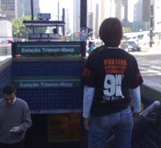

O pessoal da publicidade encarregado em divulgar o projeto da FOX 9mm São Paulo lançou uma campanha na internet, com a produção de vídeos e eventos in loco pela capital paulista.
É o chamado marketing viral, uma técnica pensada por agências de publicidade para alcançar maior repercussão de produtos. O nome viral vem do método: cria-se uma peça, que não aparente explicitamente ser uma propaganda. Algo como um vídeo amador, colocado em sites como o Youtube, que desperte curiosidade. O internauta vê aquilo, acha engraçado ou interessante, e repassa para amigos, e por aí vai. Daí, se espalha pela internet como um vírus. Invade caixas de e-mail, perfis do Orkut, etc. Claro, existem iniciativas mal sucedidas, e outras bem boladas, como volta e meia observa o Contraditorium.
Mas essa do 9mm SP eu achei legal. Legal porque, a princípio, recebi um e-mail de alguém dizendo que tinha feito uns vídeos para divulgar o seriado da FOX, e se eu queria divulgar também no CdP. Não disse que era da equipe de publicidade, ligado à produção, nada.
Abri os vídeos, que trazem uma paródia de um desses programas típicos, que fazem estrondoso sucesso na TV brasileira. O candidato se submete à uma espécie de prova, que tem como prêmio o montante de 2 mil reais. Para ganhar a bolada, o cara tem que passar por algumas missões nada agradáveis. No fim, o espectador é alertado: policiais fazem tudo aquilo, todo dia, para ganhar o tal prêmio de 2 mil por mês, na média.
Além disso, em outra atividade realizada hoje, 200 pessoas foram algemadas em árvores, postes e grades em avenidas de São Paulo, vestidas com a camiseta da minissérie. Interessante.Não tenho como acessar o blog e fazer um post durante o dia, enquanto estou no trabalho, e chego em casa normalmente meio tarde, mas já tinha lido que o Diário de um PM e o Blog da Segurança Pública também receberam o e-mail de divulgação e falaram do tema, portanto nem vou me alongar. Mas vou publicar sobre o assunto mesmo assim, caso, eventualmente, possa haver alguém que visita aqui e não visita lá, apesar de duvidar muito. ;)
Acho que a série vai ser legal, por isso divulgo aqui com o maior prazer. Se cumprirem o que prometem, muita gente vai poder ter uma pequena noção do porquê das investigações das Polícias Civis de cada estado da Federação não saírem do lugar, e os índices de solução de crimes serem tão baixos.Os links para os vídeos estão logo abaixo, e as fotos do evento em Sampa podem ser vistas neste outro link. O site oficial do 9mm SP também ficou muito legal, e conta com trechos do seriado, vale a pena a visita.
9mm São Paulo - Vídeo de divulgação 01
9mm São Paulo - Vídeo de divulgação 02
Agora é esperar até a semana que vem, quando o primeiro episódio vai passar, na terça-feira.